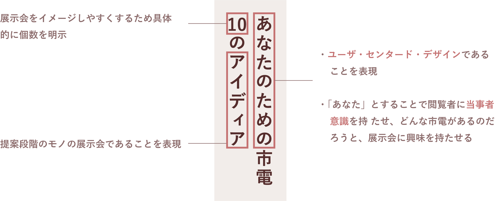

中間展示会ポスター
制作期間：一週間 制作人数：一人 設置場所：大学内会場前
遠くから見て目を引き
函館市電らしさのあるポスター
設置場所が会場前のため展示会の具体的な内容の情報よりも遠くから見て目を引き、何についての展示会であるかを伝えるためのポスターにする必要があると考えました。
大胆に配置して目を引く
電車についての展示会であることを伝えるため、展示会の名前である「トラム」を路線図に見立てて、インパクトを出すため大きく配置しました。
函館市電らしい配色
配色は函館市電らしさを表現するために展示会実行委員に函館市電といえば何色か聞いて回り、予想通りみんな口を揃えて言った「ハイカラ號」のレトロな赤を使用しました。
最終展示会ポスター
制作期間：一週間 制作人数：一人 設置場所：函館市内施設・大学外会場前
UXデザインに馴染みのない人でも展示会の内容が理解できるポスター
学内で掲示した中間展示会ポスターとは違い、市内の施設でも掲示する事から函館の市民や観光客などの「デザイン」に馴染みのない人でも展示会の内容がわかりやすいようにする必要があると考え、中間展示会ポスターから一新しました。
簡潔なキャッチコピー
できるだけ簡潔に、かつできるだけ具体的に展示会の内容を表すキャッチコピーを考えました。

想像を掻き立てるため市電を抽象化
ポスターを見た人がすぐに市電についての展示会であるとわかるようにするため、大きく市電のイラストを配置しました。また、で様々な市電の姿の想像を掻き立てるため市電だとわかる範囲で抽象化をしました。
「幸せ」をイメージしたやわらかい配色
函館市電の人の幸せを追求した展示会であるので、ポスターでも「幸せ」を表現するため、彩度の低い暖色を用いてやわらかい色合いにしました。
同じ配色でスタッフ証を作成
スタッフとなる学生が首から下げるスタッフ証を同じ配色で制作いたしました
誰でもわかりやすいデータ作りの大切さの実感
webサイトやごあいさつのパネルの制作を担当している人にメインビジュアルのaiファイルを共有しました。
レイヤー分けなど誰でもわかりやすいようなデータ作成がグループとしての仕事効率化に大きく関わるのだと実感しました。